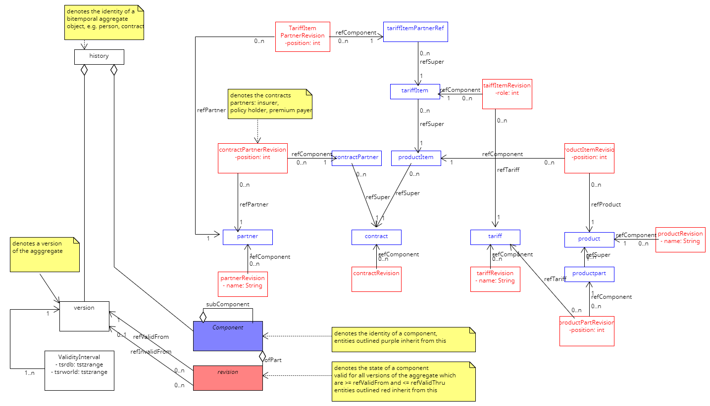

LifeInsuranceDataModel.jl

LifeInsuranceDataModel provides an API for a prototype bitemporal data model for life insurance contracts, partners, products and tariffs. 
Index
LifeInsuranceDataModel.ContractPartnerReferenceLifeInsuranceDataModel.ContractSectionLifeInsuranceDataModel.InsuranceContracts.ContractLifeInsuranceDataModel.InsuranceContracts.ContractPartnerRefLifeInsuranceDataModel.InsuranceContracts.ContractPartnerRefRevisionLifeInsuranceDataModel.InsuranceContracts.ContractPartnerRoleLifeInsuranceDataModel.InsuranceContracts.ContractRevisionLifeInsuranceDataModel.InsuranceContracts.ProductItemLifeInsuranceDataModel.InsuranceContracts.ProductItemRevisionLifeInsuranceDataModel.InsuranceContracts.TariffItemLifeInsuranceDataModel.InsuranceContracts.TariffItemPartnerRefLifeInsuranceDataModel.InsuranceContracts.TariffItemPartnerRefRevisionLifeInsuranceDataModel.InsuranceContracts.TariffItemPartnerRoleLifeInsuranceDataModel.InsuranceContracts.TariffItemRevisionLifeInsuranceDataModel.InsuranceContracts.TariffItemRoleLifeInsuranceDataModel.InsurancePartners.PartnerLifeInsuranceDataModel.InsurancePartners.PartnerRevisionLifeInsuranceDataModel.InsuranceProducts.ProductLifeInsuranceDataModel.InsuranceProducts.ProductPartLifeInsuranceDataModel.InsuranceProducts.ProductPartRevisionLifeInsuranceDataModel.InsuranceProducts.ProductPartRoleLifeInsuranceDataModel.InsuranceProducts.ProductRevisionLifeInsuranceDataModel.InsuranceTariffs.TariffLifeInsuranceDataModel.InsuranceTariffs.TariffPartnerRoleLifeInsuranceDataModel.InsuranceTariffs.TariffPartnerRoleRevisionLifeInsuranceDataModel.InsuranceTariffs.TariffRevisionLifeInsuranceDataModel.PartnerSectionLifeInsuranceDataModel.ProductItemSectionLifeInsuranceDataModel.ProductPartSectionLifeInsuranceDataModel.ProductSectionLifeInsuranceDataModel.TariffItemPartnerReferenceLifeInsuranceDataModel.TariffItemSectionLifeInsuranceDataModel.TariffItemTariffReferenceLifeInsuranceDataModel.TariffSectionBitemporalPostgres.get_typeof_componentBitemporalPostgres.get_typeof_componentBitemporalPostgres.get_typeof_componentBitemporalPostgres.get_typeof_componentBitemporalPostgres.get_typeof_componentBitemporalPostgres.get_typeof_componentBitemporalPostgres.get_typeof_componentBitemporalPostgres.get_typeof_revisionBitemporalPostgres.get_typeof_revisionBitemporalPostgres.get_typeof_revisionBitemporalPostgres.get_typeof_revisionBitemporalPostgres.get_typeof_revisionBitemporalPostgres.get_typeof_revisionBitemporalPostgres.get_typeof_revisionBitemporalPostgres.revisionTypesBitemporalPostgres.revisionTypesBitemporalPostgres.revisionTypesBitemporalPostgres.revisionTypesLifeInsuranceDataModel.compareRevisionsLifeInsuranceDataModel.connectLifeInsuranceDataModel.connect0LifeInsuranceDataModel.csectionLifeInsuranceDataModel.disconnectLifeInsuranceDataModel.get_contractsLifeInsuranceDataModel.get_partnersLifeInsuranceDataModel.get_productsLifeInsuranceDataModel.history_forestLifeInsuranceDataModel.load_rolesLifeInsuranceDataModel.persistModelStateContractLifeInsuranceDataModel.pisectionLifeInsuranceDataModel.prsectionLifeInsuranceDataModel.psectionLifeInsuranceDataModel.tsection